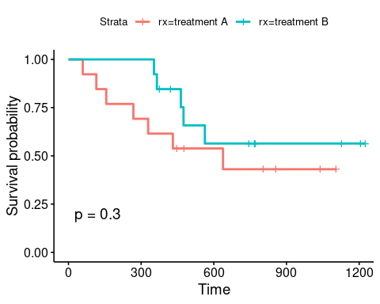
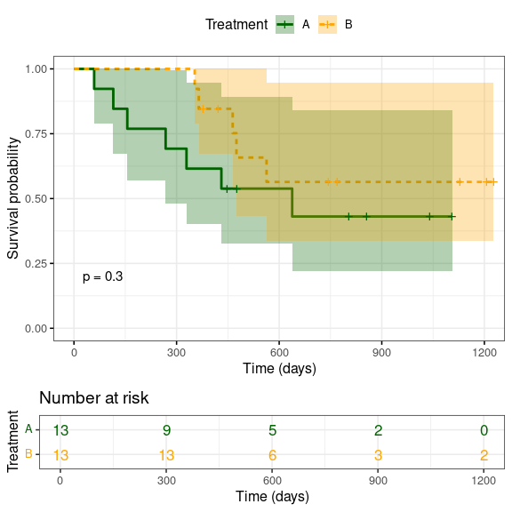
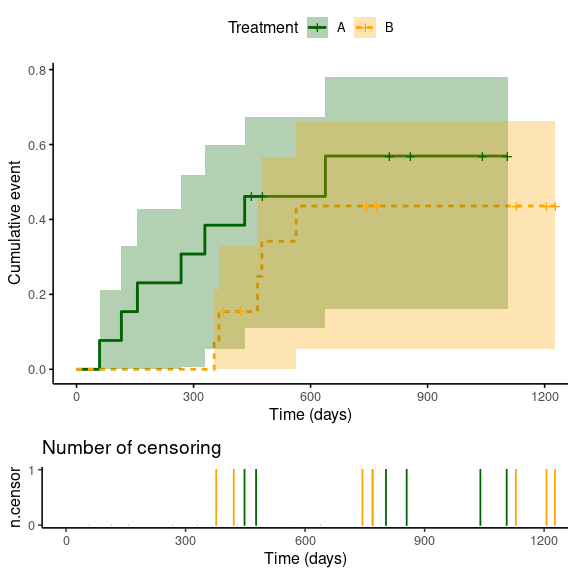
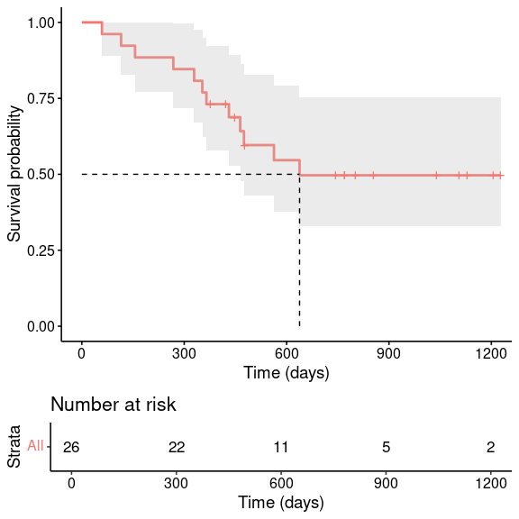
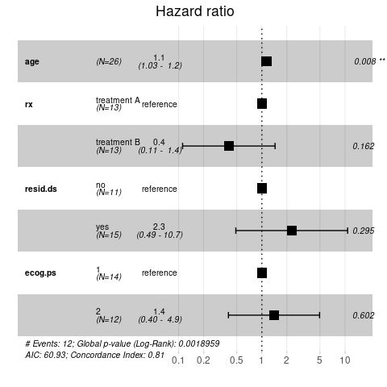
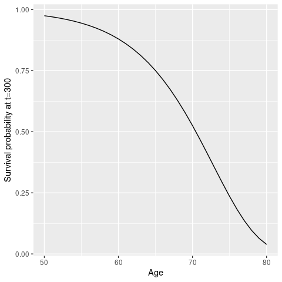

7 Survival Analysis
In the previous section we have learned how logistic regression can be used to analyse the influence of some factors (i.e. explanatory variables) on an observed event (the response variable). One example was how the number of positive detected anxillary nodes affected the probability of survival of cancer patients. Other studies, in particular clinical studies, are often more concerned with when an event happens and, relatedly, how specific covariates may influence the time-to-event. For example, how does treatment A affect the time to disease clearance compared to treatment B. This type of data requires a different analytic approach and is the subject of survival analysis.
Note, this part of our workshop was partially adapted from the excellent Survival Analysis in R tutorial by Emily C. Zabor, which also covers different methods and advanced topics than those briefly introduced here.
7.1 Terminology and notation
Before we go into details on how to conduct survival analysis in R, we need to clarify some of the common notations and terminologies.
7.1.1 Censoring
An important concept in survival analysis is censoring. Survival times are often incompletely determined for some individuals, for example because of withdrawal, loss to follow-up or the study ended before the event occurred. These are examples of right censoring. There are also left censored data, for example when an event happened before the study started, and interval censored data, for when we know that an event happened within a certain time interval but we are not exactly sure when. Including censored data in our analysis is important as they still provide important information and make our inferences more reliable.
In this workshop we are only concerned with right censored data, and an example of how this might look like is given here
 We could ask the question, what is the proportion of individuals who were event-free by day 6. We know that patients 5 and 7 experienced an event and that patients 2, 3, 4 and 8 did not experience an event by day 6. Patients 1 and 6, on the other hand, may have left the study before day 6. However, we do have some information about them, which is that they did not experience the event for a certain period of time, and we can use this information for our analysis.
We could ask the question, what is the proportion of individuals who were event-free by day 6. We know that patients 5 and 7 experienced an event and that patients 2, 3, 4 and 8 did not experience an event by day 6. Patients 1 and 6, on the other hand, may have left the study before day 6. However, we do have some information about them, which is that they did not experience the event for a certain period of time, and we can use this information for our analysis.
Note: A key assumption about censoring is that it is non-informative about the event. That is, the censoring is caused by something other than the impending event.
7.1.2 Survival and hazard functions
There are two related probabilities are used to describe survival data: the survival probability \(S(t)\) and the hazard probability \(h(t)\).
Survival function
The survival probability, also known as the survival function \(S(t)\), is the probability that an individual will survive beyond any given specified time \[ S(t) = Pr(T > t) = 1 − F(t) \] with \(F(t) = Pr(t \leq T)\) being the cumulative distribution function and seen as the compliment of the survival function.
The survival function has the following properties:
- it is not increasing
- at time \(t=0\), \(S(t)=1\)
- at time \(t=\infty\), \(S(t)=0\)
Note, as we usually measure time in discrete units, e.g days or years, the survival function is often discrete in practice.
Hazard function
The hazard function, \(h(t)\), describes the hazard at time \(t\). It is the probability that an event occurs in the neighborhood of time \(t\) divided by the probability that the subject is alive at that time. It is a bit more difficult to illustrate because it measures the instantaneous risk of an event. However, we need the hazard function to consider covariates when we compare survival of patient groups at a later section.
7.1.3 Calculating survival times in R
Datasets often do not readily contain survival times, or time-to-event, but rather have information of the start and end of the study or date of the event. Here, by means of an illustrative example, we briefly show you how to deal with dates in R. Imagine you had the following data, where we deliberately have two different date formats.
trialDF <- data.frame(
enrolled = c("2017-05-02", "2017-05-03", "2017-05-17"), # date patient was enrolled in study
last_fup = c("15/4/18", "4/7/18", "31/10/18")) # date of last follow-up
head(trialDF)## enrolled last_fup
## 1 2017-05-02 15/4/18
## 2 2017-05-03 4/7/18
## 3 2017-05-17 31/10/18You can see that the dates are currently in character format. The next step it to transform them into a date format, which we need to calculate the survival times.
trialDF <- trialDF %>%
mutate(enrolled = as.Date(enrolled, format = "%Y-%m-%d"),
last_fup = as.Date(last_fup, format = "%d/%m/%y"))
head(trialDF)## enrolled last_fup
## 1 2017-05-02 2018-04-15
## 2 2017-05-03 2018-07-04
## 3 2017-05-17 2018-10-31Now that we have the dates in the right format we can calculate the survival time simply by subtracting the enrollment date from the last follow-up date
trialDF$Surv_time <- as.numeric(trialDF$last_fup - trialDF$enrolled)
head(trialDF)## enrolled last_fup Surv_time
## 1 2017-05-02 2018-04-15 348
## 2 2017-05-03 2018-07-04 427
## 3 2017-05-17 2018-10-31 5327.1.4 R libraries and example data
To implement survival analysis in R, we will make use of the survival and survminer packages, which provide all the necessary functionalities for our purposes. Also, we will use the ovarian dataset, that comes with the survival package and contains data on survival of 26 patients in a randomised trial comparing two treatments for ovarian cancer. It contains the following 6 variables:
futime: survival or censoring timefustat: censoring statusage: in yearsresid.ds: residual disease present (1=no, 2=yes)rx: treatment groupecog.ps: ECOG performance status (1 is better)
library(survival)
library(survminer)
ovarianDF <- ovarian
head(ovarianDF)## futime fustat age resid.ds rx ecog.ps
## 1 59 1 72.3315 2 1 1
## 2 115 1 74.4932 2 1 1
## 3 156 1 66.4658 2 1 2
## 4 421 0 53.3644 2 2 1
## 5 431 1 50.3397 2 1 1
## 6 448 0 56.4301 1 1 2For downstream analysis we need to transform a few of these variables to the right format, i.e. from numeric to categorical
ovarianDF <- ovarianDF %>%
mutate(resid.ds = factor(resid.ds, labels = c('no', 'yes')),
rx = factor(rx, labels = c('treatment A', 'treatment B')),
ecog.ps = factor(ecog.ps))7.2 Kaplan-Meier
The (non-parametric) Kaplan-Meier method is the most common way to estimate survival probabilities from observed survival times. Using discrete times \(t_i\), the survival probability at \(t_i\), \(S(t_i)\) can be calculated as \[ S(t_i) = S(t_{i-1})\left(1 - \frac{d_i}{n_i}\right) \] with
- \(S(t_{i-1})\) : the probability of being alive (or not having experienced the event) at time \(t_{i-1}\)
- \(n_i\): number of individuals alive just before \(t_i\)
- \(d_i\): number of events at \(t_i\)
- \(t_0=0, \, S(t_0)=1\)
and results in a step function, where there is a step down each time an event occurs.
To implement this in R we first have to create a survival object, which is done by the Surv() function of the survival package.
survObj <- Surv(time = ovarianDF$futime, event = ovarianDF$fustat)
survObj## [1] 59 115 156 421+ 431 448+ 464 475 477+ 563 638 744+
## [13] 769+ 770+ 803+ 855+ 1040+ 1106+ 1129+ 1206+ 1227+ 268 329 353
## [25] 365 377+As you can see, some survival times are followed by a ‘+’, which indicates that these individuals were censored. The next step is to fit the Kaplan-Meier curves, which is done by passing the survObj to the survfit() function and can be done in a stratified way, for example by treatment group (rx)
sfit <- survfit(survObj ~ rx, data = ovarianDF)
summary(sfit)## Call: survfit(formula = survObj ~ rx, data = ovarianDF)
##
## rx=treatment A
## time n.risk n.event survival std.err lower 95% CI upper 95% CI
## 59 13 1 0.923 0.0739 0.789 1.000
## 115 12 1 0.846 0.1001 0.671 1.000
## 156 11 1 0.769 0.1169 0.571 1.000
## 268 10 1 0.692 0.1280 0.482 0.995
## 329 9 1 0.615 0.1349 0.400 0.946
## 431 8 1 0.538 0.1383 0.326 0.891
## 638 5 1 0.431 0.1467 0.221 0.840
##
## rx=treatment B
## time n.risk n.event survival std.err lower 95% CI upper 95% CI
## 353 13 1 0.923 0.0739 0.789 1.000
## 365 12 1 0.846 0.1001 0.671 1.000
## 464 9 1 0.752 0.1256 0.542 1.000
## 475 8 1 0.658 0.1407 0.433 1.000
## 563 7 1 0.564 0.1488 0.336 0.946From the summary we can see, amongst other things, survival times, the number of patients at risk, the proportion of surviving patients at every time point and the associated confidence intervals.
Plotting survival curves is equally easy and done by passing the fitted Kaplan-Meier curves to ggsurvplot()
ggsurvplot(sfit, data = ovarianDF, pval = T) 
The vertical lines indicate the time when censoring occurred and the \(P\) value corresponds to a log-rank test, which here indicates that there is non-significant difference between the survival curves for the two different treatment arms, even though patients receiving treatment B appear to be doing better in the first few months of follow-up.
Note, the log-rank test is a widely used method for comparing survival curves. It is a non-parametric test (i.e. it makes no assumptions about the survival distributions) and compares the observed number of events in each group to the expectation that the null hypothesis (the survival curves are identical) is true. We can get the statistic using the survdiff() function as follow:
survdiff(survObj ~ rx, data = ovarianDF)## Call:
## survdiff(formula = survObj ~ rx, data = ovarianDF)
##
## N Observed Expected (O-E)^2/E (O-E)^2/V
## rx=treatment A 13 7 5.23 0.596 1.06
## rx=treatment B 13 5 6.77 0.461 1.06
##
## Chisq= 1.1 on 1 degrees of freedom, p= 0.3which is exactly what has been added to the graph above.
resid.ds).

Note, the ggsurvplot() function provides a lot more tools to produce highly customised and informative outputs, as shown in the two examples below. As always, please refer to the help function (?ggsurvplot()) or the online version for full details.
ggsurvplot(sfit,
pval = TRUE, # Add P value (log-rank test)
pval.size = 4, # Size of P value
conf.int = TRUE, # Plot confidence intervals
risk.table = TRUE, # Add risk table
risk.table.col = "strata", # Change risk table color by groups
linetype = "strata", # Change line type by groups
ggtheme = theme_bw(base_size = 12), # Change ggplot2 theme
palette = c("darkgreen", "orange"), # Change colour of strata
xlab = 'Time (days)', # Change label of x-axis
legend.title = 'Treatment', # Change title of the legend
legend.labs = c('A', 'B')) # Change the name of the legend labels
ggsurvplot(sfit,
fun = "event", # Plot cumulative events
conf.int = TRUE, # Plot confidence intervals
ncensor.plot = TRUE, # Plot the number of censored subjects at time t
linetype = "strata", # Change line type by groups
ggtheme = theme_classic(base_size = 12), # Change ggplot2 theme
palette = c("darkgreen", "orange"), # Change colour of strata
xlab = 'Time (days)', # Change label of x-axis
legend.title = 'Treatment', # Change title of the legend
legend.labs = c('A', 'B')) # Change the name of the legend labels
7.2.1 Median survival time
We can calculate the median survival time, which corresponds to a survival probability of 0.5, directly from the survfit object. This is shown here for unstratified data, i.e. we ignore the two different treatment regimes (note the change in formula)
survfit(survObj ~ 1, data = ovarianDF)## Call: survfit(formula = survObj ~ 1, data = ovarianDF)
##
## n events median 0.95LCL 0.95UCL
## [1,] 26 12 638 464 NAwhich we can also indicate on the graph
ggsurvplot(survfit(survObj ~ 1, data = ovarianDF),
conf.int = TRUE,
risk.table = TRUE,
surv.median.line = "hv", # specify horizontal and vertical line
xlab = 'Time (days)',
legend = 'none')
\(~\)
7.3 Cox regression model
As we have seen, the Kaplan-Meier method is an easy way to compare survival data for different strata (e.g. treatment arms). However, this is restricted to categorical covariates. What we might want instead is a way to infer the effect of one or more different covariates, or explanatory variables. This is where Cox regression, or Cox proportional hazard analysis comes into play.
The Cox regression model is a (semi-parametric) model that allows us to fit uni- and multi-variable regression models that have survival outcomes. They are defined as \[ h(t|X_i) = h_0(t) e^{\beta_1 X_{i1}+ ... + \beta_p X_{ip}} \] with \(h(t)\) being the hazard, or the instantaneous rate at which an events occur, and \(h_0(t)\) being the underlying baseline hazard.
Without going deeper into the mathematical details, here we show how to fit Cox proportional hazard models to survival data using the coxph() function, which takes a survival object as the response variable and otherwise follows common syntax for regression models as we have used before. Here we are interested in the effect of all four covariates: age, rx, resid.ds and ecog.ps
# fit cox proportional hazard ratio
cph <- coxph(survObj ~ age + rx + resid.ds + ecog.ps, data = ovarianDF)
# get model summary
summary(cph)## Call:
## coxph(formula = survObj ~ age + rx + resid.ds + ecog.ps, data = ovarianDF)
##
## n= 26, number of events= 12
##
## coef exp(coef) se(coef) z Pr(>|z|)
## age 0.12481 1.13294 0.04689 2.662 0.00777 **
## rxtreatment B -0.91450 0.40072 0.65332 -1.400 0.16158
## resid.dsyes 0.82619 2.28459 0.78961 1.046 0.29541
## ecog.ps2 0.33621 1.39964 0.64392 0.522 0.60158
## ---
## Signif. codes: 0 '***' 0.001 '**' 0.01 '*' 0.05 '.' 0.1 ' ' 1
##
## exp(coef) exp(-coef) lower .95 upper .95
## age 1.1329 0.8827 1.0335 1.242
## rxtreatment B 0.4007 2.4955 0.1114 1.442
## resid.dsyes 2.2846 0.4377 0.4861 10.738
## ecog.ps2 1.3996 0.7145 0.3962 4.945
##
## Concordance= 0.807 (se = 0.068 )
## Likelihood ratio test= 17.04 on 4 df, p=0.002
## Wald test = 14.25 on 4 df, p=0.007
## Score (logrank) test = 20.81 on 4 df, p=3e-04The model summary looks slightly different to the ones we have come across before. Of interest here are the regression coefficients coef and exp(coef) and their associated \(P\) values. From the output above we can conclude that
- age has statistically significant effect on survival probability, whereas the effects of treatment, residual disease status or ECOG performance status are not significant
- age, residual disease and ECOG performance have positive (beta) coefficients, indicating that they are associated with poorer survival
- treatment B has a negative (beta) coefficient, indicating that it is associated with better survival
Note, the quantity exp(coef) is known as the hazard ratio (HR). It is best explained for categorical predictors, where it represents the ratio hazard between two groups at any point in time. A hazard ratio of HR>1 indicates increased hazard of an event, whereas HR<1 indicates a lower hazard. From the example above, the HR for treatment B was 0.4, which means that individuals in treatment group B had a 0.4 times lower rate of dying at any given time.
We can extract the regression results and put them into a nice table format using the tbl_regression() function from the gtsummary library
gtsummary::tbl_regression(cph, exp=TRUE)| Characteristic | HR1 | 95% CI1 | p-value |
|---|---|---|---|
| age | 1.13 | 1.03, 1.24 | 0.008 |
| rx | |||
| treatment A | — | — | |
| treatment B | 0.40 | 0.11, 1.44 | 0.2 |
| resid.ds | |||
| no | — | — | |
| yes | 2.28 | 0.49, 10.7 | 0.3 |
| ecog.ps | |||
| 1 | — | — | |
| 2 | 1.40 | 0.40, 4.94 | 0.6 |
| 1 HR = Hazard Ratio, CI = Confidence Interval | |||
A nicer way to display the results from a Cox regression model is by using the ggforest() function, which creates a forest plot that plots the hazard ratios, together with their associated confidence intervals and \(P\) values for all model covariates and stratified for those that are categorical (indicating the level used as reference).
ggforest(cph, data = ovarianDF)
As a final step we show you how to get prediction based on our Cox proportional hazard model. As before we can use the predict() function but unfortunately this is slightly more complicated before as it does not work on vectors but rather individual parameter values, which need to be provided as a list. For example, to predict the survival probability of a 72 year old at time \(t=300\)
# fit cox proportional hazard ratio based on age only
cph <- coxph(Surv(futime, fustat) ~ age, data = ovarianDF)
predict(cph, newdata = list(age = 80, futime = 300, fustat = 0), type='survival')## [1] 0.03909436And to get survival curves for all ages between 50 and 80 years
age <- as.matrix(50:80, ncol=1)
pred_surv <- apply(age, 1, function(x) predict(cph, newdata = list(age = x, futime = 300, fustat = 0), type='survival'))
data.frame(Age = age,
Survival = pred_surv) %>%
ggplot(aes(x = Age, y = Survival)) +
geom_line() +
labs(y = 'Survival probability at t=300')
- Modify the aboce code to plot survival probabilities of a 70 year old against time
- Perform an indepth survival analysis of the
colondataset (provided by thesurvivalpackage), which contains data from one of the first successful trials of adjuvant chemotherapy for colon cancer. You can get more information on the data and the various variables using?colon.